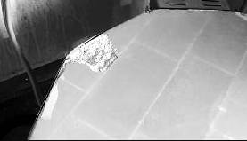
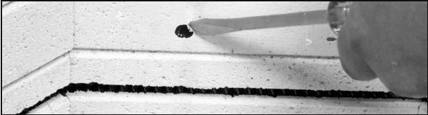

Voit vähentää tiilien vahingoittumista, jos astat tiilen levyisen vanerisuikaleen uunin reunan suojaksi kun kansi on auki. Vanerin pitäisi seurata uunin kaarevaa muotoa. Nojaa tähän vaneriin eikä suoraan tiiliä vasten. Vanerin tehtävänä on tasata rasitusta useammalle tiilelle.
Anna vain luotettavien henkilöiden ladata tai tyhjentää uunia. Heidän täytyy olla varovaisia, muuten uunisi osoittaa pian kulumisen merkkejä. Älä anna opiskeijoiden käyttää uunia ennen hoito-opastusta.
Laske uunin kansi (tai sulje ovi) varovaisesti. Jos kannen pääsätää lämähtämään tiiliä vasten vauri saattaa syntyä jo ensimmäisellä kerralla.

Jos läimäytät kannen kiinni
tiilet voivat murtua
Jos kannessa on aukipidon tuki: Vapauta tuki kokonaan ennen kannen sulkemista. Muutoin kansi tai saranat voivat vahingoittua. Kannet joiisa on jousi tai vastapaino. Ohjaa kannen liikettä kädellä koko aukeamismatkan. Jos päästät irti liian aikaisin, kansi tärähtää ja voi vahingoittua.
Aika ajoin tarkista kannen saranat ja aukipdon mekanismi. Samoin kannen kädensija.
Pidä uuni suljettuna käytön välillä. Tämä vähentää pölyä, ja estaa kannen putoamisen itsekseen. Älä säilytä mitää uunissa tai sen päällä.
Jos uuniin tulee painava täyttö aseta ylimääräinen uunilevy pohjalle tolppien alle. Levyn tarkoitus on jakaa kuorma tasaisesti koko pohjalle.
Uunilla voi olla erillinen jalusta. Sen tarkoitus on pitää uuni irti lattiasta ja auttaa lämmön poistumista pohjankin läpi. Jalustan tulee olla uunin seinien kohdalla. Liian pieni alusta rasittaa pohjatiiliä.
Alustan pitää olla vaakasuorassa ja todella tukeva. Vino alusta voi rasittaa tiiliä epätasaisesti. Keikkuva uuni voi liikahtaa tönäisystä ja esineet siirtyvät paikoiltaan.

Murusten poistaminen
Jos lasia tai lasitetta tippuu tai roiskuu uunin seinille tai pohjalle, poista se ennen seuraavaa polttoa. Muutoin aine sulaa uudelleen ja uppoaa syvemmälle tiileen. Poista roskat varovasti. Paikkaa erotusaine tarvittaessa.